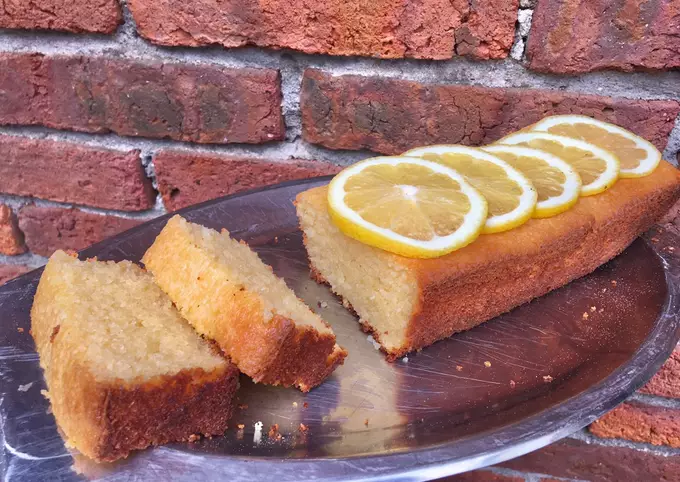

- Ingredientes:
- 10 raciones
- 1 taza arroz crudo
- 1 taza leche
- 1/2 taza aceite
- 3 huevos
- 1 taza azúcar
- 50 grs coco rallado
- Chorro esencia de vainilla
- 1 cda polvo de hornear
- Procesar el arroz para que queden los granos bien pequeños (y así al comer el budín no se sienta el arroz grande en el paladar). Yo compro este que está en la foto ya que es el que se desarma, a diferencia del parboleid que no lo hace.
- En un bowl colocar el arroz con la leche y dejar reposar toda la noche. Al día siguiente, el arroz debe haber absorbido la leche.
- En una licuadora, colocar la mezcla del bowl y el resto de los ingredientes. Licuar bien hasta despedazar el arroz por completo, entre cada batido con una cuchara deben mover la mezcla ya que es difícil que se integre todo y el arroz quede en pedazos chicos.
- Colocar la mezcla en una budinera/tortera enmantecada y enharinada y mandar a horno precalentado a 180 grados durante 50 minutos aprox.
- Una vez que pinchan con un cuchillo y no sale mezcla cruda está listo. Dejar enfriar y desmoldar, pueden agregar un glasé de limón o naranja o azúcar impalpable por encima.